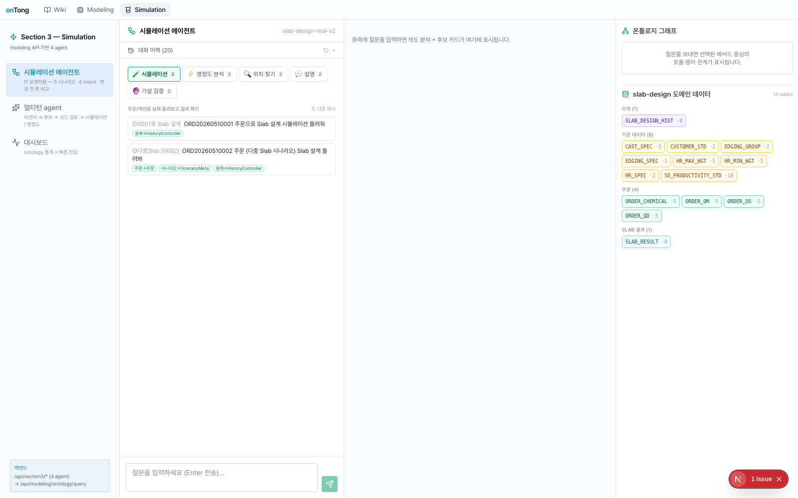
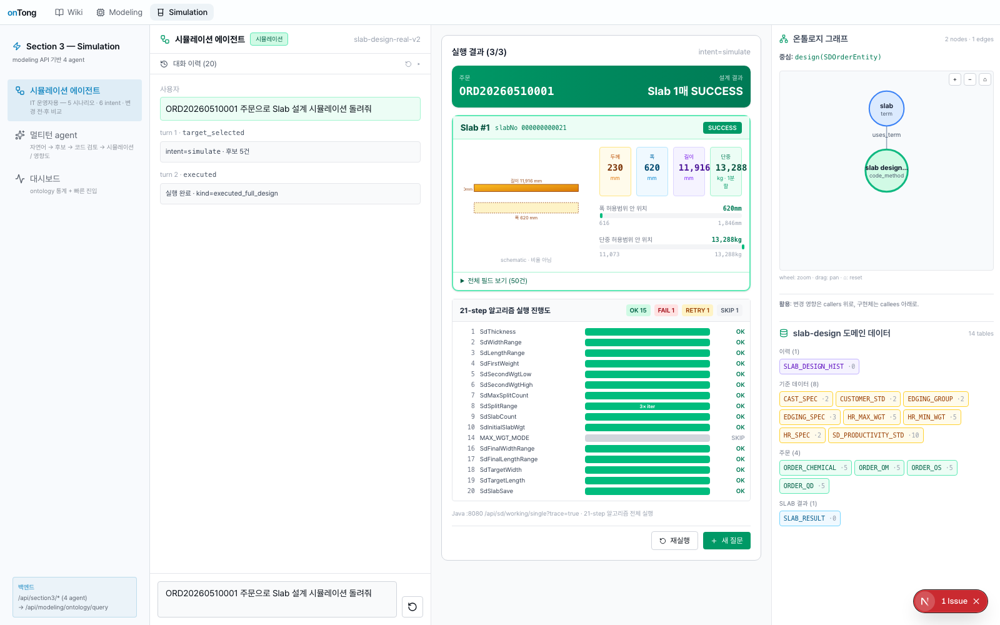
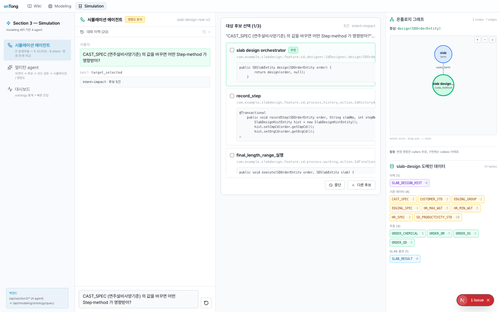
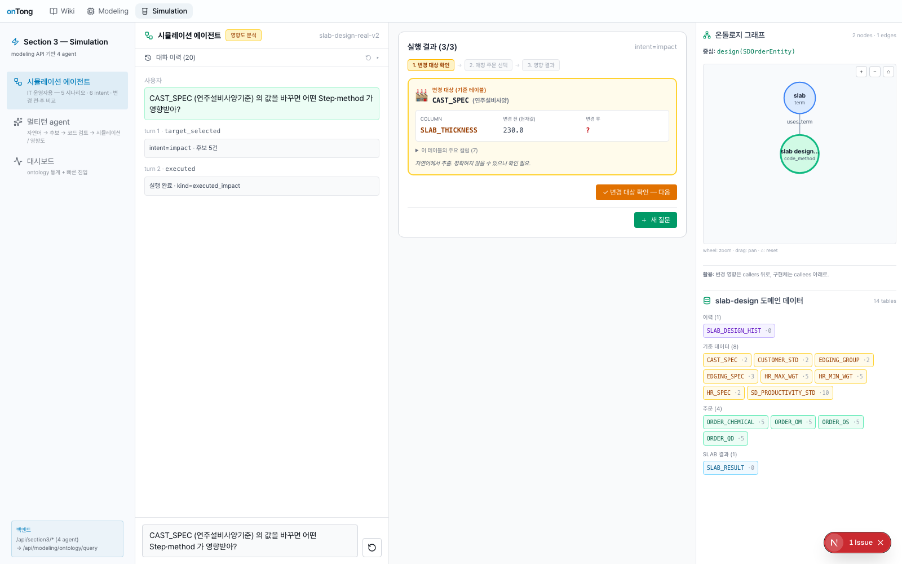
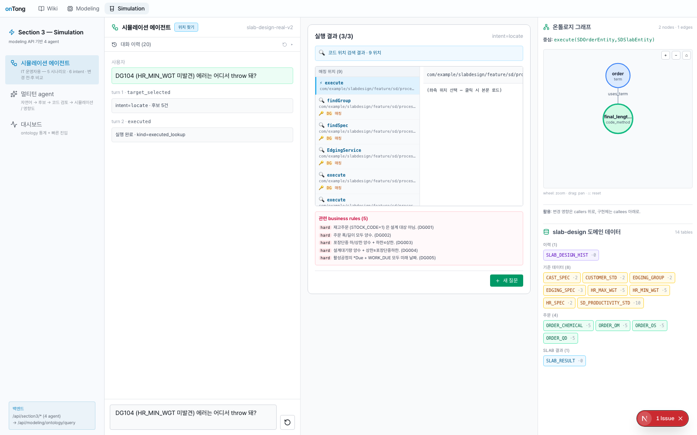
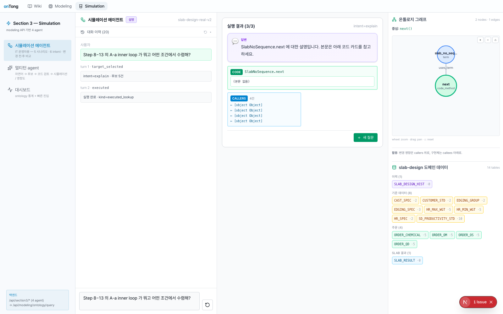
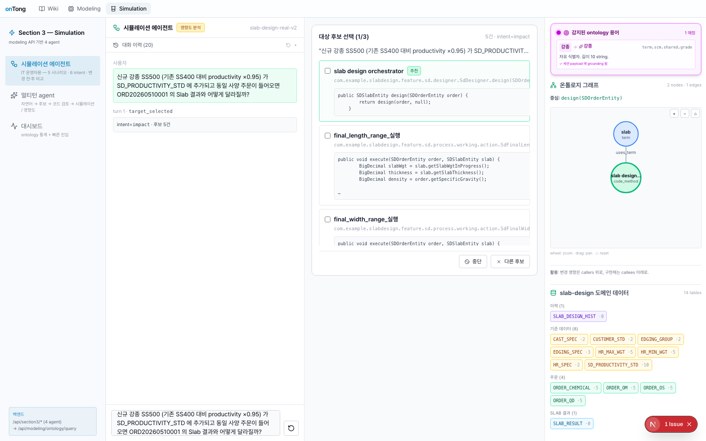
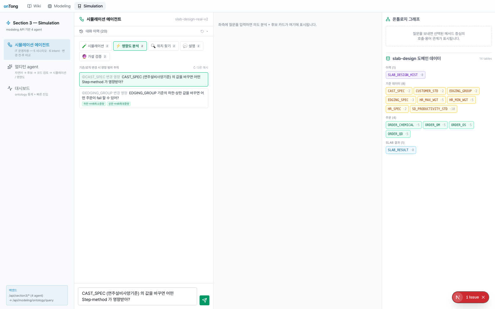

slab-design-real_v2 ontology (83 terms · 136 actions · 148 realizations · 163 anchors · 22 rules) 위에서 IT 운영자의 자연어 질문을 5종 intent 로 분류하고, 단계별 ontology 호출과 사용자 확인을 거쳐 실측 데이터 기반의 결과를 surface 하는 멀티턴 에이전트.
사용자 질문 의도를 OpenAI classifier 로 분류 + 정규식 패턴(예: "신규 X 추가" → hypothesis) 으로 보정. 의도에 따라 단계와 결과 UI 가 달라진다.
주문 1건 → 21-step 알고리즘 통과 → Slab 결과 카드 + Gantt
변경 대상 확인 → 매칭 주문 선택 → 영향 코드/룰/Step/Action/API
키워드 매칭 코드 위치 list + 본문 highlight
자연어 답변 + 관련 ontology 객체 카드 grid
4-step SSE 스트리밍 — 기존 분석 → 가상 합성 → 가상 주문 → 결과 비교
/suggested_questions 에서 동적 생성 — JPO 한국어 javadoc + ontology business_terms + seed orders 합성주문→주문 term) — 진짜 ontology 기반
simulate intent + 주문번호 감지 시 multiturn bundle 합성 대신 Java :8080 /api/sd/working/single?trace=true 호출 → 21-step 통과 → 실제 Slab 결과 + trace

변경 대상 확인 → 매칭 주문 선택 → 영향 결과. 단계별 stepper UI 와 "다음/이전/전체 보기" 버튼.
methods (행 click → 코드 본문 + 1-hop) ·
steps (21-step 매핑) ·
actions (ontology actions) ·
apis (Controller) ·
rules (business_rules) ·
orders (매칭 주문)

backend _enrich_locate_payload 가 code_methods.body_text/name/fqn LIKE 매칭 →
각 위치 (file_path · line · matched_line · keyword · snippet 500 chars) 첨부.
<mark> 노랑 배경으로 highlight/method/body 호출
CODE (emerald, body preview) ·
RULES (rose, severity + statement) ·
CALLERS (sky, fqn list)
"신규 X 가 추가되면" 패턴 자동 감지 (정규식 override) → 4단계 backend SSE 순차 전송.


| ontology 데이터 풍부도 | 83 terms · 136 actions (sim_verified) · 148 realizations · 163 anchors · 22 rules · 1,081 methods · 2,298 call_sites |
|---|---|
| simulate (ORD20260510001) | ✓ Java :8080 호출 → slabWgt 13,288.01 (golden S1 byte-equal) |
| impact 풍부화 | ✓ target_change · affected_orders 5건 · affected_rules 1건 · methods 3건 (real fqn) |
| hypothesis grounding | ✓ existing 8 rows × 0.95 = virtual 8 rows · projected slabWgt 12,624 (-5.0%, expected -5%) |
| SSE 스트리밍 | ✓ 4 stages + done event · 400ms 간격 progressive |
| endpoints health | ✓ /sessions /data/tables /suggested_questions /term_lookup /hypothesis/run · 모두 200 |
| tsc | ✓ clean (0 errors) |
Section 3 · 시뮬레이션 에이전트 · jyu-simul · 2026-05-22